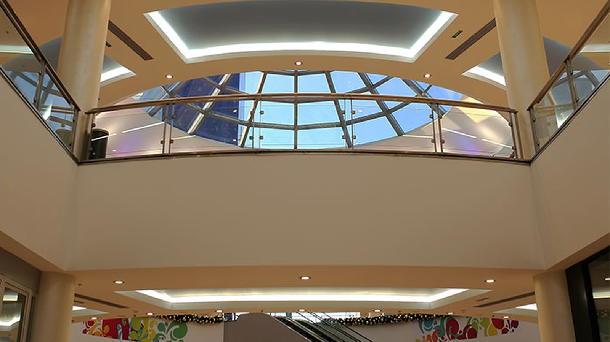
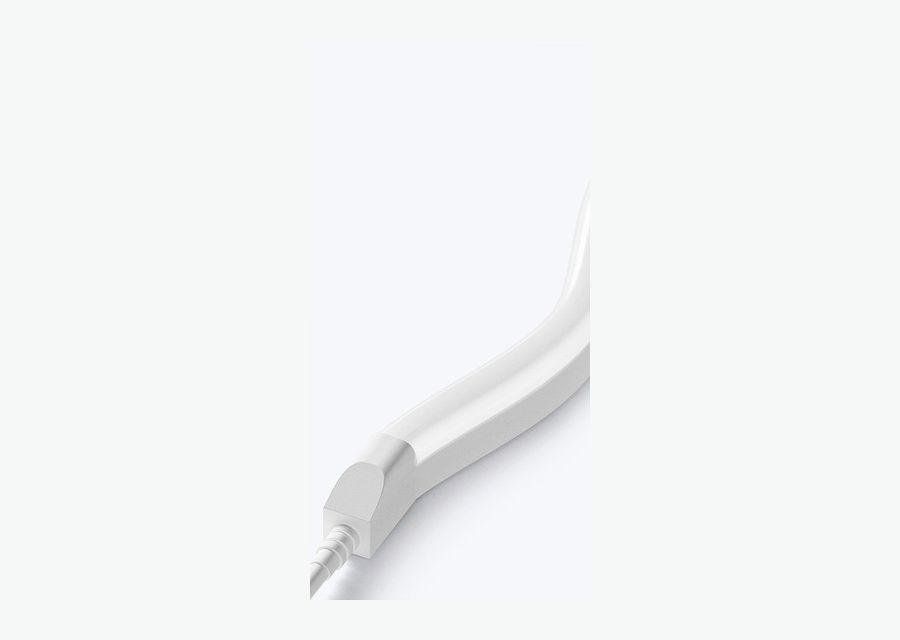

Produto em destaque
Use luz neutra e contínua para prateleiras, nichos e vitrines.

Aplicação • Retail & Display Lighting
Loja e vitrine precisam de luz que venda: destacar produto, orientar circulação e criar identidade visual. Para display e prateleira, COB 4000K em perfil entrega linha limpa. Para fachada, contorno e campanha, Neon LED cria impacto. Para sistemas flexíveis de loja, trilho magnético pode complementar a iluminação de destaque.
SEO e intenção
Palavra-chave principal: fita de led para loja. Variações usadas sem repetição excessiva: fita de led para vitrine, fita de led em vitrine, fachada de loja com fita de led, iluminacao led para loja.
Use luz neutra e contínua para prateleiras, nichos e vitrines.
Neon LED e RGB podem reforçar campanha, marca e fachada.
Planeje zonas, fontes acessíveis e produtos fáceis de substituir.
Produtos indicados
A lógica segue páginas fortes de aplicação: primeiro o ambiente, depois o problema técnico, depois o produto certo para cotação.



Guia de especificação
A referência da Flexfire separa Display Lighting e Retail Lighting porque o comprador comercial pensa por função. Para o site em português, vale unir loja e vitrine nesta primeira fase, porque o cluster ainda é médio e precisa concentrar autoridade. A página deve falar com arquiteto, lojista e comprador B2B: mostrar produto, reduzir erro de especificação e encaminhar para cotação por projeto.
Subcenários
Esses blocos ajudam a cobrir buscas de cauda longa e dão caminhos claros para arquitetos, lojistas e compradores B2B.
COB 4000K e perfil para destacar produto sem pontos aparentes.
Planejar este usoLinhas discretas em marcenaria e displays.
Planejar este usoNeon LED para contorno, marca e comunicação visual.
Planejar este usoFAQ técnico
Respostas focadas em objeções reais de compra: cor da luz, proteção, fonte, perfil, instalação e manutenção.
COB 4000K é uma boa opção para luz contínua e neutra. Neon LED funciona melhor quando a linha luminosa deve aparecer.
Serve para campanha e atmosfera, mas para mostrar cor real do produto use luz branca adequada.
Sim, melhora acabamento, protege a fita e facilita alinhamento.
Divida circuitos por zonas, deixe fontes acessíveis e escolha produtos compatíveis com o uso diário.
Cotação B2B
Envie ambiente, metragem, tensão, temperatura de cor, proteção IP desejada e fotos da obra. A equipe pode indicar fita, perfil, fonte e acessórios compatíveis.